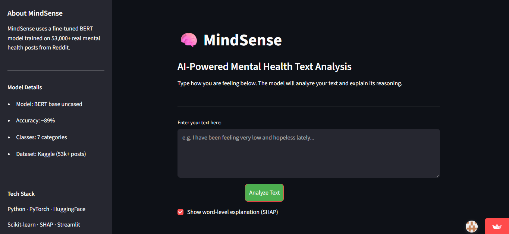
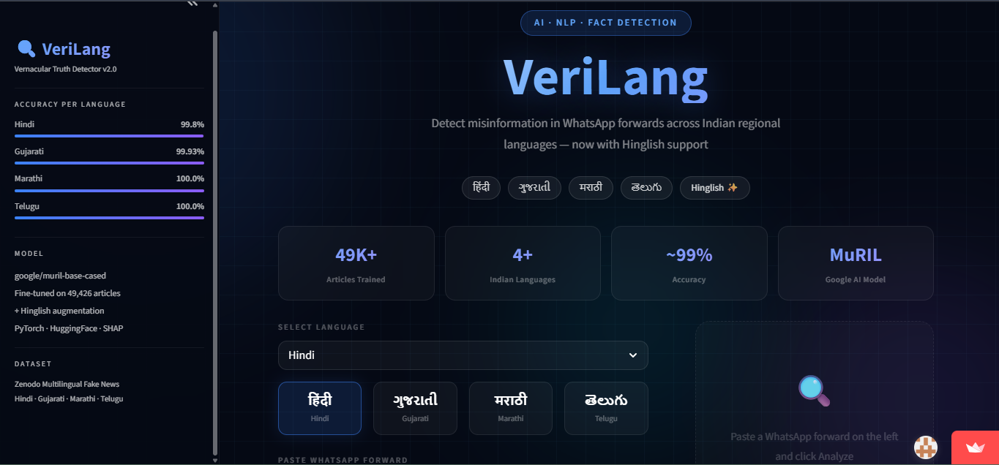
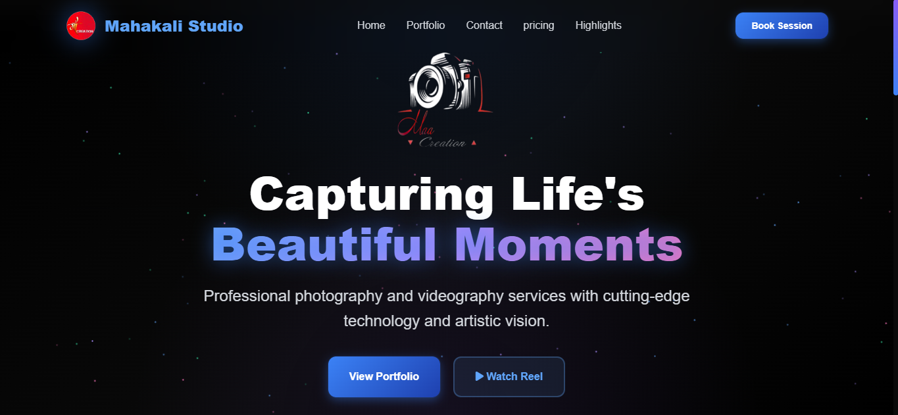
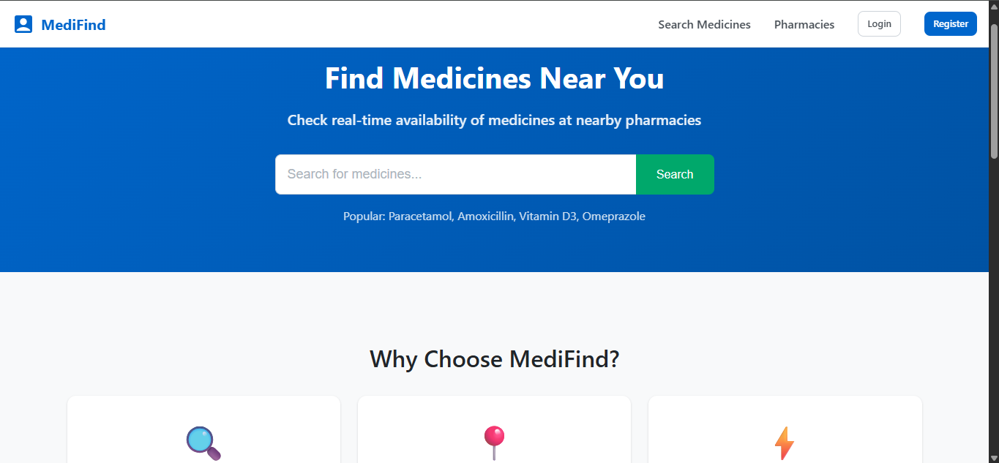

Featured Projects

MindSense
Fine-tuned BERT model for mental health text classification across depression, anxiety, PTSD, and bipolar disorder categories. Includes explainable AI with SHAP for transparent predictions.

VeriLang
Multilingual fake news detector using fine-tuned Google MuRIL transformer for Hindi, Gujarati, Marathi, and Telugu. Tackles misinformation in regional Indian languages where data is scarce.

Maa Creation
Photography studio site with dynamic portfolio gallery, video reels, and Cloudinary-powered media management. Reduced load time 40% with optimized delivery and automated client inquiry handling.

Medicine Availability Tracker
Real-time pharmacy stock finder with role-based auth, location-based medicine search, and pharmacy inventory management. Built on MERN stack with JWT-secured APIs.

Gramin Setu
A full-stack healthcare platform empowering ASHA workers in rural India. Integrates pre-trained ML models (ONNX/TFLite) to classify patient health risk in real-time — AI/ML put to genuine, life-changing use.

Maata Raksha
Machine learning model for maternal risk assessment using clinical and pregnancy-related parameters, with ASHA worker-focused features to support early identification of high-risk pregnancies.